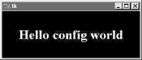
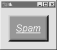

7.2 Configuring Widget Appearance
So
far, all the buttons and labels in examples have been rendered with a
default look-and-feel that is standard for the underlying platform.
That usually means gray on Windows, with my machine's color
scheme. Tkinter widgets can be made to look arbitrarily different,
though, using a handful of widget and packer options.
Because I generally can't resist the temptation to customize
widgets in examples, I want to cover this topic early on the tour.
Example 7-1 introduces some of the configuration
options available in Tkinter.
Example 7-1. PP2E\Gui\Tour\config-label.py
from Tkinter import *
root = Tk()
labelfont = ('times', 20, 'bold') # family, size, style
widget = Label(root, text='Hello config world')
widget.config(bg='black', fg='yellow') # yellow text on black label
widget.config(font=labelfont) # use a larger font
widget.config(height=3, width=20) # initial size: lines,chars
widget.pack(expand=YES, fill=BOTH)
root.mainloop()
Remember, we can call a widget's config
method to reset its options at any time, instead of passing them all
to the object's constructor. Here, we use it to set options
that produce the window in Figure 7-1.

This may not be completely obvious unless you run this script on a
real computer (alas, I can't show it in color here), but the
label's text here shows up in yellow on a black background, and
with a font that's very different from what we've seen so
far. In fact, this script customizes the label in number of ways:
- Color
-
By setting the bg option of the label widget here,
its background is displayed in black; the fg
option similarly changes the foreground (text) color of the widget to
yellow. These color options work on most Tkinter widgets, and accept
either a simple color name (e.g., 'blue') or a
hexadecimal string. Most of the color names you are familiar with are
supported (unless you happen to work for Crayola). You can also pass
a hexadecimal color identifier string to these options to be more
specific; they start with a # and name a color by
its red, green, and blue saturations, with an equal number of bits in
the string for each. For instance, '#ff0000'
specifies eight bits per color, and defines pure
red -- "f" means four "1" bits in
hexadecimal. We'll come back to this hex form when we meet the
color selection dialog later in this chapter.
- Size
-
The label is given a preset size in lines high and characters wide by
setting its height and width
attributes. You can use this setting to make the widget larger than
the Tkinter geometry manager would by default.
- Font
-
This script specifies a custom font for the label's text by
setting the label's font attribute to a
three-item tuple giving the font family, size, and style (here:
Times, 20-point, and bold). Font style can be
normal, bold,
roman, italic,
underline, overstrike, and
combinations of these (e.g., "bold italic"). Tkinter
guarantees that Times, Courier,
and Helvetica font family names exist on all
platforms, but others may work too (e.g., system
gives the system font on Windows). Font settings like this work on
all widgets with text, such as labels, buttons, entry fields,
listboxes, and Text (the latter of which can
display more than one font at once with "tags"). The
font option still accepts older X-style font
indicators -- long strings with dashes and stars -- but the new
tuple font indicator form is more platform independent.
- Layout and expansion
-
Finally, the label is made generally expandable and stretched by
setting the pack expand and
fill options we met in the last chapter; the label
grows as the window does. If you maximize this window, its black
background fills the whole screen and the yellow message is centered
in the middle -- try it.
In this script, the net effect of all these settings is that this
label looks radically different then the ones we've been making
so far. It no longer follows the Windows standard look-and-feel, but
such conformance isn't always important. Tkinter provides
additional ways to customize appearance, not used by this script:
- Border and relief
-
A bd=N widget option
can be used to set border width, and a
relief=S option can
specify a border style; S can be
FLAT, SUNKEN,
RAISED, GROOVE,
SOLID, or RIDGE -- all
constants exported by the Tkinter module.
- Cursor
-
A cursor option can be given to change the
appearance of the mouse pointer when it moves over the widget. For
instance, cursor='gumby' changes the pointer to a
Gumby figure (the green kind). Other common cursor names used in this
book include watch, pencil,
cross, and hand2.
- State
-
Some widgets also support the notion of a state, which impacts their
appearance. For example, a state=DISABLED option
will generally stipple (gray out) a widget on screen, and make it
unresponsive; NORMAL does not.
- Padding
-
Extra space can be added around many widgets (e.g., buttons, labels,
and text) with the
padx=N and
pady=N options.
Interestingly, you can set these options both in
pack calls (where it adds empty space around the
widget in general), and in a widget object itself (where it makes the
widget larger).
To illustrate some of these extra settings, Example 7-2 configures the custom button captured in Figure 7-2 and changes the mouse pointer when above it.
Example 7-2. PP2E\Gui\Tour\config-button.py
from Tkinter import *
widget = Button(text='Spam', padx=10, pady=10)
widget.pack(padx=20, pady=20)
widget.config(cursor='gumby')
widget.config(bd=8, relief=RAISED)
widget.config(bg='dark green', fg='white')
widget.config(font=('helvetica', 20, 'underline italic'))
mainloop()

To see the effects generated by these two script's settings,
try out a few changes on your computer. Most widgets can be given a
custom appearance in the same way, and we'll see such options
used repeatedly in this text. We'll also meet operational
configurations, such as focus (for focusing
input), and more. In fact, widgets can have dozens of options; most
have reasonable defaults that produce a native look-and-feel on each
windowing platform, and this is one reason for Tkinter's
simplicity. But Tkinter lets you build more custom displays when you
want to.
|